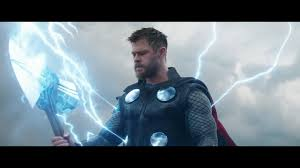
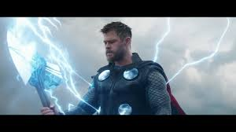

Marvel's The Avengers (classified under the name Marvel Avengers Assemble in the United Kingdom and Ireland), or simply The Avengers, is a 2012 American superhero film based on the Marvel Comics superhero team of the same name.
The film's development began when Marvel Studios received a loan from Merrill Lynch in April 2005. After the success of the film Iron Man in May 2008, Marvel announced that The Avengers would be released in July 2011 and would bring together Tony Stark (Downey), Steve Rogers (Evans), Bruce Banner (Ruffalo), and Thor (Hemsworth) from Marvel's previous films. With the signing of Johansson as Natasha Romanoff in March 2009, the film was pushed back for a 2012 release. Whedon was brought on board in April 2010 and rewrote the original screenplay by Zak Penn. Production began in April 2011 in Albuquerque, New Mexico, before moving to Cleveland, Ohio in August and New York City in September. The film has more than 2,200 visual effects shots.